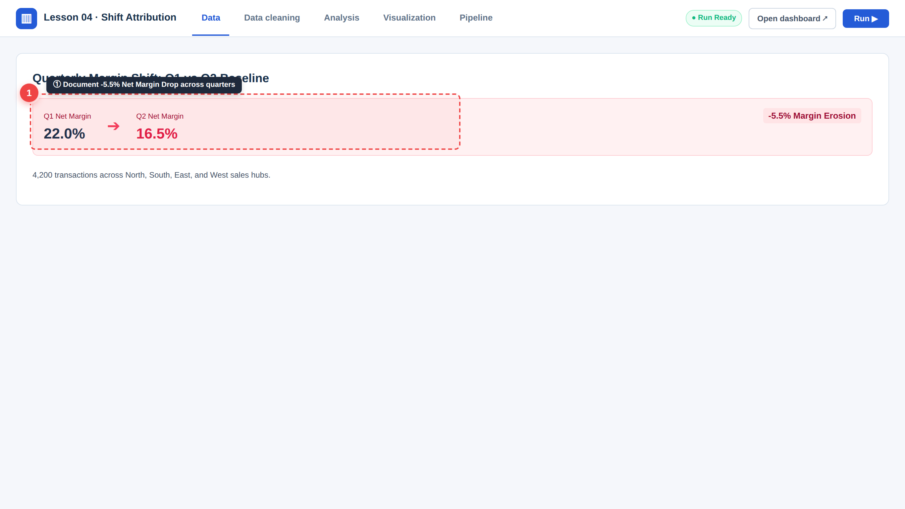
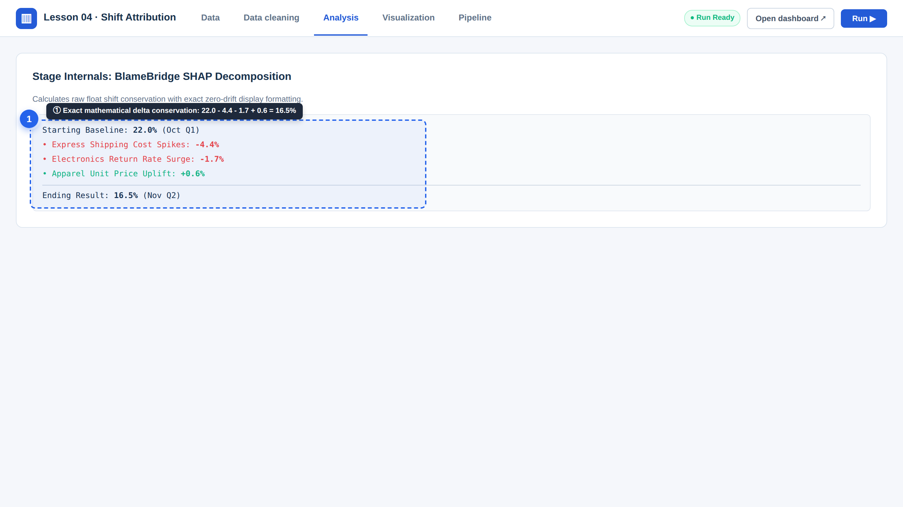
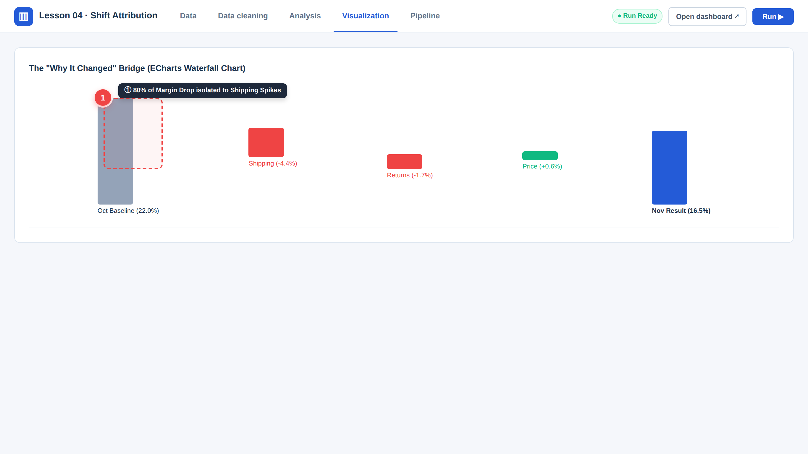
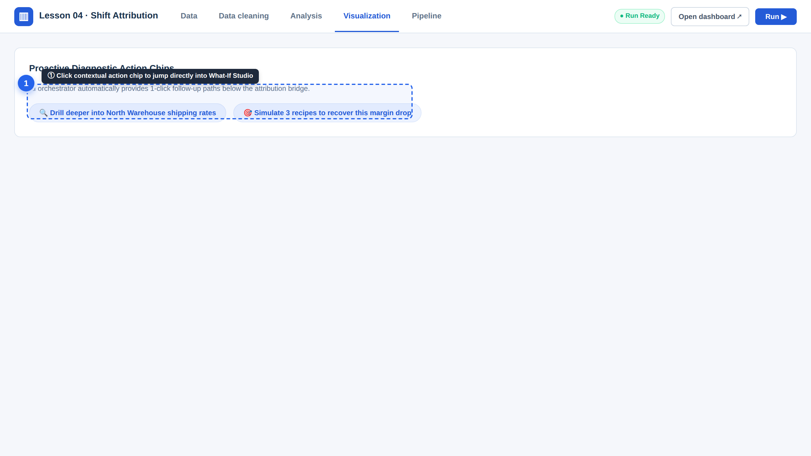

Lesson 04 / E-Commerce Margins
"Why it changed" (Attribution Bridge).
Why did net profit margin drop by -5.5% between Q1 and Q2? Decompose period shift into floating positive and negative drivers with exact conservation.
BlameBridge
SHAP value decomposition
Waterfall chart
Zero-drift conservation
Proactive action chips
Part 1 · The Analytical Problem
Net shifts trigger inter-departmental blame.
When an executive metric drops—such as net margin falling from 22.0% in Q1 to 16.5% in Q2—every team points to their colleagues: logistics blames marketing discounts, marketing blames rising return rates, and finance blames warehouse overhead. Without mathematical attribution, leadership cannot prioritize corrective actions.
In this lesson, we examine 4,200 e-commerce orders spanning Q1 and Q2 across four sales regions. Our goal is to decompose the -5.5% net margin erosion into discrete, mathematically conserved driver contributions and render an intuitive ECharts waterfall bridge.
Part 2 · The Visual Concept
The floating waterfall bridge.
1. Mathematically Conserved Drivers
Using TreeSHAP attribution in BlameBridge, every factor is quantified in exact basis points. The baseline (22.0%), negative drags (-4.4% shipping, -1.7% returns), and positive offsets (+0.6% price mix) sum precisely to the final ending result (16.5%).
2. Floating Visual Architecture
An ECharts stacked bar chart creates the floating waterfall effect: a transparent spacer series lifts each driver bar to its starting level. Drags render in alert red (#ef4444), positive lifts in safe green (#10b981), and anchor periods in solid neutral blue (#245bd7).
Part 3 · Data Dictionary
E-Commerce Margin Dataset.
4,200 customer orders
2,100 Q1 orders
2,100 Q2 orders
-5.5% net margin shift
Part 4 · Step-by-Step Instructions
Build the attribution bridge in WPS-AI Studio.
01
Upload Data & Specify Period Comparison
Launch the studio via python launcher.py. Create a new project, upload ecommerce_margin_shift.csv, and paste the following into the Business context field:
Each row is one e-commerce customer transaction in Q1 or Q2 2024. net_margin_pct is the profit margin of the order. shipping_cost and discount_pct are cost drivers. returned is 1 if the item was returned. Compare Q1 baseline against Q2 to attribute the net margin erosion.
02
Prompt the AI Stage Creator
In the Chat composer, set the context to Project and send the following prompt:
Build an attribution pipeline using BlameBridge to explain the quarterly margin change from Q1 to Q2.
Calculate exact delta contributions for shipping_cost, discount_pct, return_rate, and product_mix.
Render an ECharts waterfall chart showing the starting baseline (22.0%), negative and positive driver bars, and final ending margin (16.5%).
Provide proactive action chips for downstream scenario exploration.
Save stages; I will select Run.
Review the proposed changes and select Apply. Then select Run ▶ in the top header.
Part 5 · Annotated Screenshot Reference
Compare against the verified Studio UI.
Use these full-browser annotated captures to verify each stage of your execution:

Annotated Guidance: ① Confirm the data setup documents the -5.5% margin erosion between Q1 (22.0%) and Q2 (16.5%) across 4,200 orders.

Annotated Guidance: ① The analysis stage enforces exact delta conservation: 22.0% baseline - 4.4% (shipping) - 1.7% (returns) + 0.6% (pricing) = 16.5% final margin.

Annotated Guidance: ① The waterfall immediately isolates that 80% of the entire net margin loss (-4.4% out of -5.5%) stems exclusively from carrier shipping cost spikes.

Annotated Guidance: ① One-click action chips allow the analyst to jump directly to Lesson 05 (drill into shipping carrier anomalies) or Lesson 07 (simulate margin recovery recipes).
Part 6 · Worked Reference Dashboard
Interactive Reference Waterfall & Checkpoints.
Verify your calculations against the live reference chart below:
Part 7 · Troubleshooting
What to check if numbers differ.